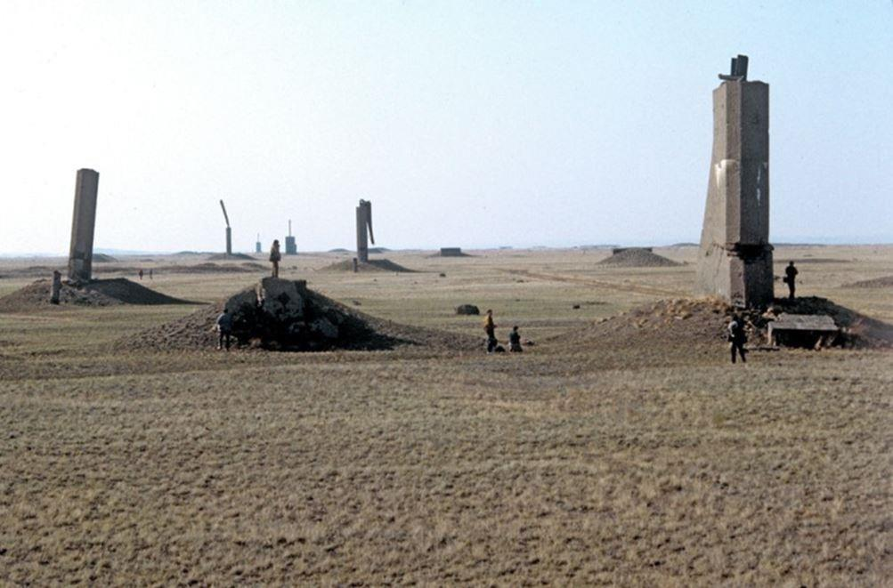

Semipalatinsk-21, le lourd héritage nucléaire de l’ère soviétique
par Marc SOKOLOVITCH
Au cours de la guerre froide, les conséquences humanitaires des armes nucléaires ont suscité des inquiétudes généralisées et fondées et une information publique considérable sur le sujet. Les arsenaux nucléaires du monde sont toujours aussi massifs. Pourtant, de nombreuses personnes semblent aujourd'hui avoir oublié l’impact potentiel de ces armes. Dans certains endroits, cependant, l'héritage des détonations nucléaires fait partie intégrante de la vie quotidienne. Un de ces endroits est la zone autour de l'ancien site d'essais nucléaires de Semipalatinsk-21 (STS) au Kazakhstan. De 1949 jusqu'à la fermeture du site en 1991, l'Union soviétique a effectué plus de 450 détonations nucléaires sur le site de Semipalatinsk. Plus de 111 des tests ont été effectués dans l'air et à la surface de la terre. Plus d'un million de personnes ont été reconnues par le gouvernement du Kazakhstan comme ayant souffert, au sens large, de ces essais.
Le monde a appris la puissance horrible des armes nucléaires lorsque les États-Unis ont largué une bombe à l'uranium sur la ville japonaise d'Hiroshima le 6 août 1945 et trois jours plus tard, une bombe au plutonium sur Nagasaki. Pour Staline, la conclusion était claire : la nouvelle arme avait complètement changé l'équilibre des pouvoirs dans le monde et l'Union soviétique n'avait d'autre choix que de développer ses propres armes nucléaires. Staline a nommé Lavrentiy Beria, l'ancien impitoyable chef du NKVD, prédécesseur du KGB, pour superviser le projet de bombe nucléaire soviétique. Le physicien Igor Kurchatov a été choisi pour diriger le programme et diriger les travaux des meilleurs scientifiques de l'URSS, dont le dissident plus tard et le prix Nobel de la paix Andrey Sakharov. D'énormes ressources ont été consacrées au programme nucléaire. En 1950, environ 700 000 personnes étaient impliquées, dont plus de la moitié étaient des prisonniers.
Afin de tester les armes atomiques, un site d'essai désigné était nécessaire. Le 21 août 1947, le gouvernement soviétique a décidé d'établir un site d'essai dans la partie nord-est de la République socialiste soviétique du Kazakhstan (KSSR). Le site d'essais nucléaires de Semipalatinsk-21 (STS), appelé aussi le Polygone, occupait un territoire de 18 300 km2, à l'ouest de la ville de Semipalatinsk (la ville sera rebaptisée Semey en 2007).
Ce fut donc à Semipalatinsk que les efforts soviétiques pour créer une bombe atomique ont été couronnés de succès le 29 août 1949, avec l'explosion d'une bombe au plutonium qui était presque une copie exacte de la bombe américaine larguée sur Nagasaki quatre ans plus tôt. C'est à Semipalatinsk que l'URSS a largué une bombe atomique pour la première fois d'un avion, le 18 octobre 1951. Et c'est au même endroit que la première détonation thermonucléaire de l'URSS a été faite en 1953, jusqu’à la RDS-37, la première bombe à hydrogène à deux étages de l'Union soviétique, testée pour la première fois le 22 novembre 1955. Sur un total de 715 essais nucléaires soviétiques, 456 ont été effectués en Semipalatinsk.
111 essais ont été effectués à la surface de la terre (25) ou dans l'air (86) entre 1949 et 1962, jusqu'au traité d'interdiction partielle des essais nucléaires, signé le 5 août 1963 à Moscou peu de temps après la crise de Cuba et le début de la Détente. Ce sont ces tests atmosphériques qui ont causé la plus grande contamination de l'environnement et l'exposition aux rayonnements du public (estimée à 95 % de la dose totale).
Après 1962, tous les essais de Semipalatinsk ont été effectués sous terre dans des tunnels et des puits, et la contamination s'est généralement limitée au site d'essai lui-même, à quelques exceptions près. Le dernier essai a été effectué le 19 octobre 1989. Le rendement total des essais atmosphériques sur le site de Semipalatinsk est estimé à environ 6,4 Mt - l'équivalent de plus de 400 bombes d’Hiroshima. Alors que certains des essais nucléaires sur le Polygone impliquaient des explosions atomiques, d'autres expériences ont été conçues pour étudier l'impact des explosifs conventionnels sur le plutonium et l'uranium hautement enrichi (HEU), les matières fissiles utilisées dans les bombes nucléaires, ou pour assurer la sécurité des armes nucléaires lors d'un accident simulé tel qu'un incendie ou une explosion à proximité.
La Perestroïka de Mikhaïl Gorbatchev a laissé la voix à divers mouvements de protestation en Union soviétique, dont le mouvement «Semipalatinsk-Nevada» au Kazakhstan. Ce mouvement antinucléaire Kazakh a été formé en 1989 et a été l'un des premiers grands mouvements antinucléaires de l'ex-Union soviétique.
Il était dirigé par l'auteur Olzhas Suleimenov et a attiré des milliers de personnes à ses manifestations ou lors de ses campagnes de mobilisations. Le premier secrétaire du Parti communiste kazakh, et après l’indépendance du pays, le nouveau président du Kazakhstan, Nursultan Nazarbayev, ont pris la décision de fermer le site en 1991. Mais alors que le site d'essai a été fermé officiellement par la Russie en 1993, son héritage lourd demeure.
Lorsque les scientifiques et les militaires se sont retirés du Kazakhstan après l'effondrement de l'Union soviétique, ils ont abandonné des tunnels et creusé des trous remplis de résidus de plutonium - suffisamment de plutonium, s'il était entièrement récupéré, pour que des terroristes ou un État construisent des dizaines de bombes nucléaires. Dans le vide post-soviétique du début des années 90, les conditions à Semipalatinsk ressemblaient à l'apocalypse que les armes nucléaires ont longtemps présagée. Une ville de 40,000 habitants qui était autrefois desservie par deux vols directs quotidiens au départ de Moscou s'est transformée en une dystopie de quelques milliers de malheureux et de chiens errants dont le principal défi quotidien était de trouver de la nourriture et de la chaleur avec des températures négatives extrêmes. De nombreuses régions de l'ancienne Union soviétique ont été appauvries au cours des premières années après l’effondrement ; celles-ci étaient si pauvres et sans foi ni lois, que les gens qui y vivaient ont eu recours au nettoyage des infrastructures des essais nucléaires. Les plus hauts fonctionnaires étaient désespérés et désargentés. Le directeur russe de Semipalatinsk-21 a été licencié en 1993 pour avoir vendu du matériel dans les installations du site. Entre 1991 et 2012, des indivis peu scrupuleux, à la recherche de métaux et d'équipements provenant de l'ancien site d'essai soviétique se sont approchés des secteurs remplis de matières fissiles non gardées, et certains ont pénétré par effraction dans les zones d’expérimentations contenant des résidus de plutonium. Les américains ont découvert en Afghanistan, dans des ordinateurs appartenant au Califat Islamique des références précises sur des bombes sales pouvant être construites a partir des débris de Semipalinsk. Des métaux récupérés en Chine, étaient souvent radioactifs car provenant du site. Des commissions de scientifiques et d’ingénieurs nucléaires kazakhs, russes et américains ont été mises sur pied pour sécuriser le site avec des financements internationaux de centaines de millions de dollars et entre autres, l’assistance du Laboratoire national de Los Alamos (LANL).
L'une des raisons - outre des fins de confidentialité et de secret - du choix initial de Semipalatinsk comme site d'essais nucléaires était l'immensité et l'éloignement relatif des steppes kazakhes. Mais les bombes atomiques ne limitent pas leur impact à l'emplacement de leur détonation, et une grande population pourrait être affectée. Alors que les gens n'étaient pas autorisés à vivre sur le polygone d'essais nucléaires, un million de personnes résidaient à moins de 160 km, et il y avait plusieurs villages à proximité des frontières du site. Les retombées nucléaires des essais se sont propagées encore plus loin, également dans la région voisine de l'Altaï, dans la Fédération de Russie d'aujourd'hui.
Que le monde ait évité d'utiliser des armes nucléaires dans une véritable guerre depuis 1945 ne signifie pas que les armes n'ont pas fait de victimes. Pendant la guerre froide, «des centaines de milliers de citoyens ont été exposés à des niveaux de rayonnement dangereux lorsque leurs gouvernements ont produit et testé des armes nucléaires qui pourraient être utilisées si les tensions internationales dégénéraient en une guerre «chaude»». L'Institut de médecine et d'écologie radiologiques de Semey, fondé en 1967, estime qu'à proximité du site d'essais nucléaires de Semipalatinsk, entre 500 000 et un million de personnes ont été exposées à des doses de rayonnement importantes dans les années 1949-1962, lorsque la dernière détonation au-dessus du sol a eu lieu.
Alors que l'explosion et la chaleur d'une explosion nucléaire peuvent détruire de grandes villes, c'est l'exposition au rayonnement des retombées nucléaires qui constituait la menace la plus puissante pour la santé humaine des essais nucléaires de Semipalatinsk. Une estimation est que quatre tests seuls (le premier test du 29 août 1949, un le 24 septembre 1951, le premier test thermonucléaire le 12 août 1953 et un le 24 août 1956) à Semipalatinsk ont contribué à plus de 95 % de la dose collective pour contaminer la population vivant à proximité du site d’essai.
À l'époque soviétique, les essais nucléaires et leurs conséquences sur la santé humaine étaient entourés d'un secret total. En fait, jusqu'en 1956, le gouvernement n'a même pas mené d'études sur l'effet des essais nucléaires sur la population vivant à proximité du site d'essai. Il n'y a pas de statistiques claires disponibles sur les effets aigus des tests.
Les radiations libérées à Semipalatinsk depuis 1949 seraient plusieurs centaines de fois supérieures à celles de la catastrophe de Tchernobyl. Dans les zones irradiées du Polygone, la radioactivité atteint à ce jour 10 000 à 20 000 micro-röntgens par heure.
Il n'y a pas de réponses simples quant au degré d'impact des essais nucléaires sur l'homme. Le nombre de victimes et la manière dont les personnes sont affectées sont contestés. Mais il ne fait aucun doute que les essais d'armes nucléaires de Semipalatinsk ont affecté la santé d'un grand nombre de personnes ainsi que de leurs enfants. De plus, la contamination radioactive du site d'essai lui-même et de certaines zones adjacentes continue de présenter des risques potentiels pour la population - bien que les experts affirment que ces risques sont souvent exagérés. Outre l'impact réel sur la santé et les dangers observables dans l'environnement, la population locale continue de vivre dans l'incertitude - la radioactivité est invisible et difficile à comprendre pour les profanes.
Le plutonium reste dangereux pendant des millénaires; les institutions humaines restent rarement durables pendant plus de quelques centaines d'années. Avec des quantités substantielles de plutonium uniquement couvertes de bouchons en béton et d'autres collections enterrées relativement peu profondes, un futur gouvernement kazakh pourrait-il essayer de récupérer le plutonium pour l'utiliser dans une bombe? Dans cent ou mille ans, cette zone ne pourra-t-elle plus être surveillée et des charognards avec un équipement sophistiqué reviendront-ils récupérer le plutonium? L'inadéquation entre la durée de vie du plutonium et celle des institutions humaines est un problème qui s'étend bien au-delà des steppes du Kazakhstan. Les superpuissances de la guerre froide, et maintenant des États nucléaires plus récents, ont accumulé plus de mille tonnes de matières nucléaires utilisables pour des armes - assez pour des dizaines de milliers de bombes nucléaires. Trouver un moyen durable de rendre ce matériau à jamais sûr, même sans intervention humaine constante, reste l'un des défis majeurs de l'ère nucléaire.
Monument commémorant l'achèvement du programme de prévention de la prolifération des montagnes de Degelen en anglais, kazakh et russe.
Partager cette page